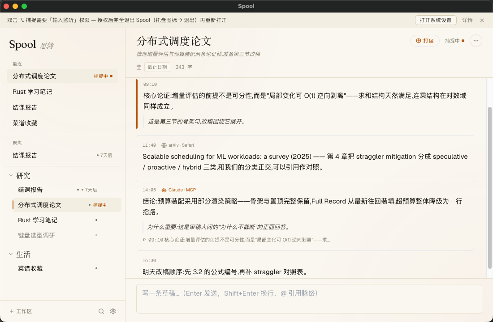
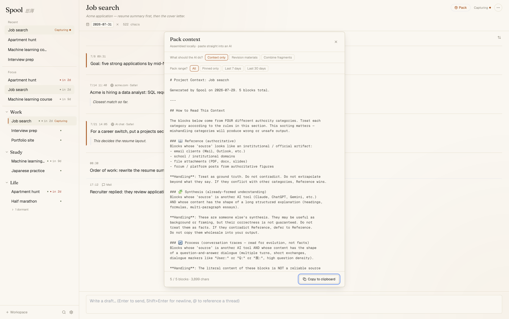
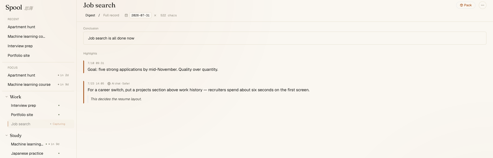

Your projects,
never re-explained.思簿
Spool is a context hub for long-running projects.
Capture a fragment the moment it appears — a good AI answer, a decision buried in an email, a half-formed thought. Spool threads your fragments by project and packs any thread into a paste-ready briefing, so you can re-enter a project — or re-brief an AI — instantly.
Free · macOS (Apple Silicon) · Local-first · No account · Zero telemetry
Do the whole loop, right now
Capture three fragments, pack them, and watch a cold AI conversation pick your project straight up. The data is scripted — the workflow is exactly the real one.
LLMs do not remember your project. Every new conversation starts from zero — and across many AIs, tabs, and weeks, a project’s context gets shredded. Spool compresses “re-explaining” into a single paste.
Capture → Thread → Pack
One keypress. No decisions.
Copy anything, then double-tap ⌥. The fragment lands in the current thread with its source detected automatically — down to the browser tab you copied from. A quiet overlay confirms the save on whatever screen you’re on; the main window never has to come forward. Capture rides the ⌘C muscle memory you already have.
…the committee noted that the revised §3.2 argument resolves the truncation question and asked for one more pass on notation…
⌥⌥ → ✓ Captured · MailA log, not a chat.
Fragments accumulate in an append-only timeline per project — two tiers only, Workspace → Thread, no infinite nesting. The newest blocks are “where you left off”: no status note to maintain, no filing ceremony. Your annotations attach to any block and rank above everything else later.
Chapter 4 classifies straggler mitigation as speculative, proactive, or hybrid…
Fix §3.2 numbering first, then the comparison table.
Paste-ready context, with provenance.
One click assembles the thread into a Markdown briefing sorted by authority — your own words highest, references kept as references, AI-derived content flagged for verification. Pure string assembly: deterministic, no AI in the hot path, works with every AI on earth because it’s just text.
### ✍️ Author’s notes (highest signal)
### 📚 Reference
### 🤖 AI-derived (verify first)
⎘ Copied · 3,615 chars
Three commitments
Zero-friction capture
No window switch, no dialog, no tags to choose. If capture costs more than a keypress, it doesn’t happen — so everything in Spool is built backwards from that keypress.
Provenance-faithful packs
Every block carries where it came from and when. The AI reading your pack knows what’s your judgment, what’s a source, and what another AI said — and treats them differently.
AI as librarian, not author
Over MCP, your own AI clients read, search, and file into the library — every write attributed and append-only. What you wrote by hand is never overwritten. Spool itself ships with zero AI: no keys, no cloud.
Quiet by design
Warm paper, one accent, no badges fighting for attention. The interface stays out of the way until you have something to file.

The thread view: fragments with time, source, and your annotations. (Chinese UI shown; English ships too.)

Packing a thread: choose intent and range, copy, paste anywhere.

A finished thread’s digest: conclusion, pinned blocks, files & links.
Your AI, resident librarian
A pack briefs an AI once. Over the Model Context Protocol, the AI clients you already own — Claude Desktop, Cursor, and friends — get standing access instead: they read months of context on demand, search every thread in your library, and file conclusions back into the right place.
Ten tools, two opt-in switches, no network port. Every AI write is attributed and append-only — your handwritten blocks are read-only to machines, permanently.
A real session, traced. Your AI sees the whole library — not one paste.
Your data stays on your machine. No exceptions.
- No account, no server, no telemetry, no crash reporting
- Everything lives in a local SQLite file you can copy or delete
- The app’s content-security policy structurally blocks all outbound network requests
- Data leaves only when your MCP client reads it — behind two opt-in switches
The mark: a spool seen from above, its thread pulling free.